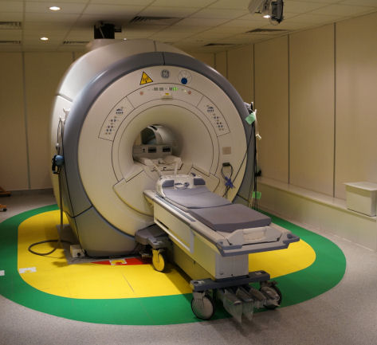
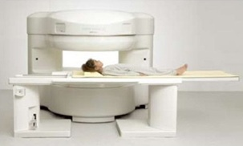

Badanie metodą rezonansu magnetycznego wykorzystuje silne pole magnetyczne i fale radiowe w celu uzyskania obrazów wnętrza ciała ludzkiego. Stałe pole magnetyczne uzyskiwane jest w magnesach różnych typów: stałych, oporowych i nadprzewodzących. Magnesy te różnią się konstrukcją i natężeniem wytwarzanego pola. W systemach medycznych najpowszechniej stosuje się magnesy nadprzewodzące. Natężenie stałego pola magnetycznego ma wpływ na możliwości diagnostyczne aparatu. W praktyce klinicznej stosowane są aparaty o natężeniu pola magnetycznego wynoszącym od 0,1 do 3 Tesli. Magnesy o polu 1,5 Tesli i większym nazywane są wysokopolowymi i jedynie takie pozwalają na wykonywanie specjalistycznych badań takich jak: spektroskopia MR, badania czynnościowe fMRI, czy ultraszybkie badania naczyniowe.
Zamknięty system MR
Otwarty system MR
Wyróżnia się dwa rodzaje aparatów MR ze względu na konstrukcję budowy magnesów: systemy zamknięte oraz systemy otwarte. Standardowe aparaty MR mają budowę cylindrycznego tunelu o średnicy około 60 cm i długości około 120 cm. W przypadku, gdy Pacjent z klaustrofobią musi mieć wykonane badanie MR, bardzo pomocnym rozwiązaniem tego problemu są właśnie systemy otwarte. Tam Pacjent leży między dwoma blokami magnesu a wzdłuż jednego boku oraz powyżej głowy i przed stopami ma otwartą przestrzeń, co znacznie podnosi komfort badania. System otwarty ma również taką zaletę, że w czasie badania umożliwia dostęp do pacjenta z trzech stron a to ułatwia wykonywanie procedur inwazyjnych.